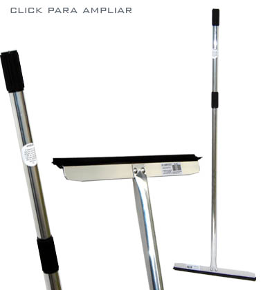

|  | O
Alumirodo de uso doméstico cabo em alumínio, é produzido
em ligas especiais de alumínio de altíssima resistência,
equipado com manoplas em pvc no cabo, evitando assim o contato do
alumínio com a mão do usuário. Possui cabo em
alumínio de 1,2m que é acoplado, por meio de rebites(o
que o torna muito resistente), a uma base confeccionada em duralumínio,
(alumínio de alta resistência) e está disponível
nos tamanhos de 30, 40 e 50cm. Sua borracha é macia e de alta
qualidade que se molda perfeitamente ao piso, mesmo aos lisos e irregulares,
propiciando assim a secagem completa, dispensando o pano ou outros
adereços de secagem. Foi projetado para que possibilite a
fácil substituição da borracha, que também é fornecida
como refil. |